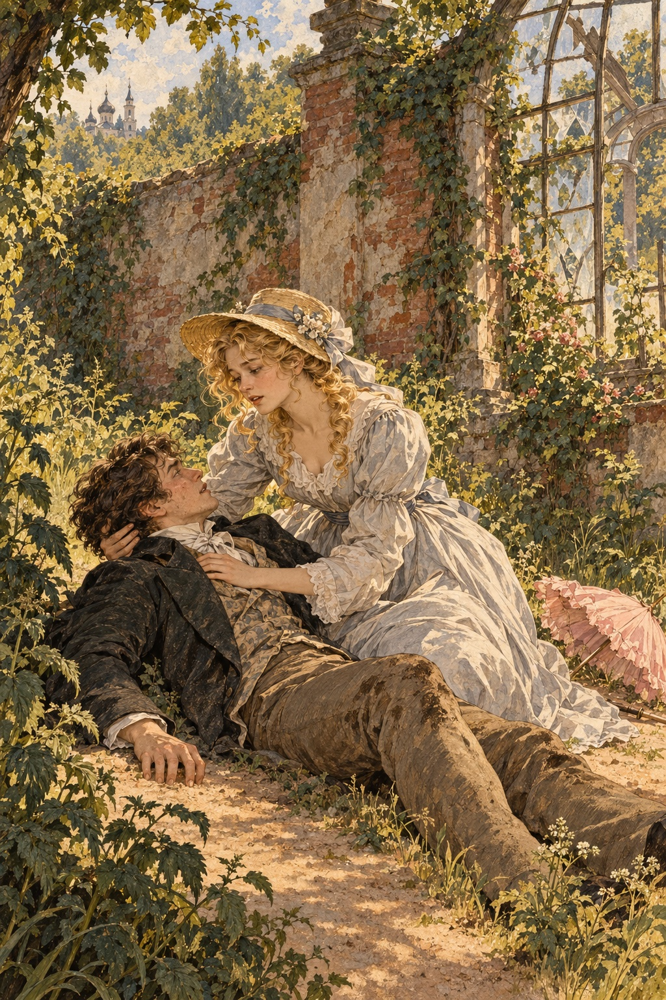

Ivan Turgenev · First Love
제12장
날이 흘렀다.
지나이다는 갈수록
이상하고 알 수 없는 사람이 되었다.
어느 날 그녀의 방에 들어가니
짚으로 엮은 의자에 앉아
뾰족한 탁자 모서리에
머리를 기댄 채였다.
그녀가 몸을 일으켰다.
온 얼굴이 눈물에 젖어 있었다.
“아, 당신이군요.”
그녀가 쓰라린 웃음을 지었다.
“이리 와 보세요.”
내가 다가가자
그녀는 내 머리에
손을 얹었다.
갑자기 머리카락을 움켜잡고
비틀기 시작했다.
“아파요….”
마침내 내가 말했다.
“아파요?
나는 안 아픈 줄 알아요?
나는 안 아프냐고요.”
그러다 갑자기
그녀가 놀라 외쳤다.
“아!”
내 머리카락이
한 줌 뽑힌 것이었다.
“내가 무슨 짓을 했지?
가엾은 볼데마르 씨.”
그녀는 뽑힌 머리카락을
조심스레 가지런히 했다.
손가락에 감아
작은 고리로 만들었다.
“이걸 작은 목걸이 장식에 넣고
지니고 다닐게요.”
그녀가 말했다.
눈에는 여전히
눈물이 반짝였다.
“조금은 위로가 되겠지요.
이제 가 보세요.”
집에 돌아오니
불편한 일이 벌어지고 있었다.
어머니가 아버지에게
무언가를 따지고 있었다.
아버지는 늘 하듯
차갑고 예의 바르게
입을 다물었다.
그리고 곧 집을 나갔다.
어머니 말은
알아듣지 못했다.
그럴 마음도 없었다.
다만 이야기가 끝나자
어머니가 나를 방으로 불러
공작부인 집에 너무 자주 간다고
몹시 못마땅해한 것은 기억난다.
어머니 말로는
공작부인은
무슨 짓이든 할 수 있는 여자였다.
나는 어머니 손에
입을 맞추었다.
대화를 끝내고 싶을 때마다
하던 행동이었다.
그러고는 내 방으로 갔다.
지나이다의 눈물 때문에
머릿속이 완전히 뒤죽박죽이었다.
무슨 생각을 해야 할지
알 수 없었다.
나도 울고 싶었다.
열여섯 살이었지만
여전히 아이였다.
말렙스키는 더는
떠오르지 않았다.
벨로브조로프는 날마다
더 험악해졌다.
약삭빠른 백작을
늑대가 양을 보듯 노려보았다.
하지만 나는
그 누구도 생각하지 못했다.
생각은 갈피를 잡지 못했고
혼자 있을 자리만 찾았다.
특히 무너진 온실을 좋아했다.
높은 벽에 올라
앉아 있곤 했다.
불행하고 외롭고 슬픈
청년의 모습이
스스로도 가여울 정도였다.
그러면서 그런 괴로움이
달콤했다.
나는 거기에
푹 빠져 있었다.
어느 날도 벽에 앉아
먼 곳을 바라보며
종소리를 듣고 있었다.
그때 무엇인가
내 몸을 스치고 지나갔다.
바람도 떨림도 아니었다.
누군가 가까이 온 듯한
기척이었다.
아래를 내려다보았다.
길을 따라 지나이다가
빠르게 걷고 있었다.
가벼운 회색 옷을 입고
어깨에는 분홍 양산을 걸쳤다.
그녀는 나를 보자 멈춰 섰다.
밀짚모자 챙을 젖히고
벨벳 같은 눈을 들어
나를 보았다.
“그 높은 데서
뭘 하고 계세요?”
그녀가 묘한 웃음을 지으며
물었다.
“늘 저를 사랑한다고 하시잖아요.
정말 사랑한다면
여기 길로 뛰어내려 보세요.”
말이 끝나기도 전에
나는 아래로 날아갔다.
누가 등 뒤에서
밀기라도 한 것 같았다.
벽은 네 미터가 조금 넘었다.
발로 땅을 디뎠지만
충격이 너무 커서
버티지 못했다.
넘어져 잠깐 정신을 잃었다.

의식이 돌아왔을 때
나는 눈을 뜨지 않은 채
곁에 지나이다가 있음을 느꼈다.
“사랑스러운 아이야.”
그녀가 몸을 굽혀 말했다.
목소리에는 걱정과 다정함이
함께 담겨 있었다.
“어떻게 그런 짓을 했어?
내 말을 정말 듣다니.
나도 널 사랑해.
일어나.”
그녀의 숨결이
내 가슴 가까이 닿았다.
그녀의 손이
내 머리를 만졌다.
그러더니 갑자기,
아, 그때의 나는 어땠던가!
부드럽고 서늘한 입술이
내 얼굴 곳곳에
입을 맞추기 시작했다.
마침내 내 입술에도 닿았다.
그런데 지나이다는
내 얼굴빛을 보고
정신이 돌아온 걸 알아챘나 보다.
나는 여전히
눈을 감고 있었다.
그녀가 얼른 몸을 일으켰다.
“일어나요, 장난꾸러기.
무모한 사람 같으니.
왜 흙바닥에 누워 있어요?”
나는 일어났다.
“양산 좀 주워 주세요.
어디에 던졌나 봐요.
그런 눈으로 보지 말고요.
참 어리석기는.
다치진 않았어요?
쐐기풀에 데었겠네요.
쳐다보지 말라니까요.”
그녀는 혼잣말처럼 덧붙였다.
“아무것도 모르고,
대답도 없네.
집에 가요, 볼데마르 씨.
옷을 털고요.
따라올 생각은 마세요.
그러면 화낼 거예요.
다시는….”
말을 끝내지 않고
재빨리 떠났다.
나는 길에 주저앉았다.
다리에 힘이 풀렸다.
쐐기풀에 손이 따갑고
등이 쑤셨다.
머리도 어지러웠다.
하지만 그때의 행복감은
평생 다시 느끼지 못했다.
팔다리 곳곳에
달콤한 통증처럼 맺혀 있다가
마침내 기쁨의 뜀박질과
환호로 터져 나왔다.
그래,
나는 아직 아이였다.